UDN
Search public documentation:
ProceduralBuildingsTutorialCH
English Translation
日本語訳
한국어
Interested in the Unreal Engine?
Visit the Unreal Technology site.
Looking for jobs and company info?
Check out the Epic games site.
Questions about support via UDN?
Contact the UDN Staff
日本語訳
한국어
Interested in the Unreal Engine?
Visit the Unreal Technology site.
Looking for jobs and company info?
Check out the Epic games site.
Questions about support via UDN?
Contact the UDN Staff
程序化建筑物教程
概述
设置
采集网格物体
您需要使用一组静态网格物体作为建筑物的构建块。应该创建每个网格物体，这样在面向网格物体的时候支点才会在它的左下角。创建一个新的包，然后将这些网格物体导入这个包。 您将需要进行以下操作：- 一个可以重复使用的窗户或墙壁网格物体
- 角落网格物体与窗户或墙壁网格物体的高度相配
- 一些临街网格物体
- 一个可以重复使用的顶部剪切网格物体
- 角落网格物体与剪切网格物体的高度相配

创建新规则集
通过右击并选择列表中的 ProcBuilding Ruleset，在您的软件包中创建一个新的 ProcBuilding Ruleset。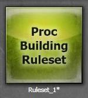
创建 ProcBuilding Volume（程序化建筑体积）
右击工具栏中的立方体后，编辑 构建画刷 - 立方体 (Brush Builder - Cube)。更改它的值，使 x=1024、y=2048 以及 z=512。右击体积图标，然后选择 ProcBuilding。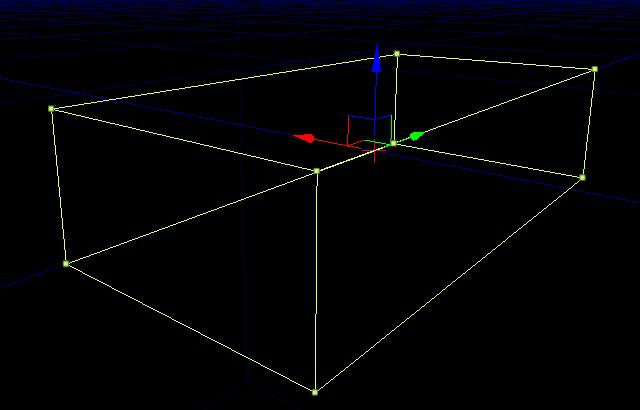
通过将 ProcBuilding Ruleset 从内容浏览器中拖放到 ProcBuilding Volume，应用您的新 ProcBuilding Ruleset。设置建筑物的地板
 首先，我们需要创建一个 Top/Bottom 节点。在 Facade 中右击，然后从列表中选择节点。这个节点允许我们定义建筑物的顶部、底部和中间部分。
首先，我们需要创建一个 Top/Bottom 节点。在 Facade 中右击，然后从列表中选择节点。这个节点允许我们定义建筑物的顶部、底部和中间部分。
 下一步，我们需要添加一个角落节点。右击并从列表中选择节点。将它设定为顶部/底部节点的 Mid 附件。这样可以允许我们定义一个外部角落网格物体，一个内部角落网格物体和主要网格物体。
下一步，我们需要添加一个角落节点。右击并从列表中选择节点。将它设定为顶部/底部节点的 Mid 附件。这样可以允许我们定义一个外部角落网格物体，一个内部角落网格物体和主要网格物体。
 现在，我们可以添加我们的窗户或者墙壁网格物体。通过在内容浏览器中选择您想要得到的 Static Mesh，创建一个 Mesh 节点，然后从 Facade 中的右击菜单中选择 Mesh。另外，您可以按住 'M' 键然后在 Facade 中左击创建这个节点。在 Mesh 节点属性中，您需要定义 X Z 大小（DimX 和 DimZ）。在这个示例中，我们使用的是一个 512 x 512 的窗户网格物体。
现在，我们可以添加我们的窗户或者墙壁网格物体。通过在内容浏览器中选择您想要得到的 Static Mesh，创建一个 Mesh 节点，然后从 Facade 中的右击菜单中选择 Mesh。另外，您可以按住 'M' 键然后在 Facade 中左击创建这个节点。在 Mesh 节点属性中，您需要定义 X Z 大小（DimX 和 DimZ）。在这个示例中，我们使用的是一个 512 x 512 的窗户网格物体。
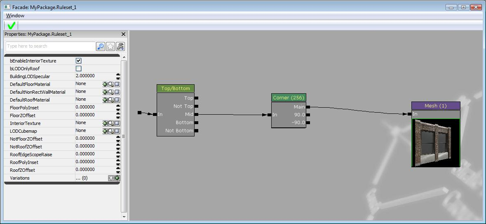
目前为止，我们的建筑物外观如下所示：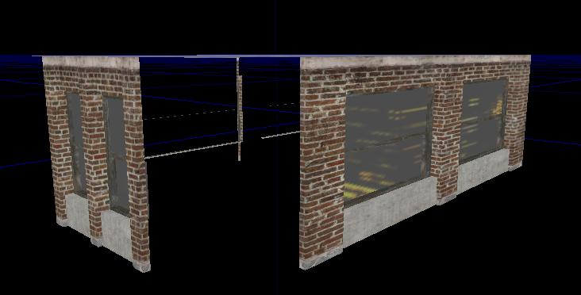
您将会注意到，网格物体在我们的 ProcBuilding Volume 较长的那一面被拉伸。为了解决这个问题，我们需要在 x 轴上重复使用这个网格物体。通过使用右击菜单添加一个 Reapeat（重复）节点，并将其设定在 Corner 节点和 Mesh 节点之间。在节点属性中，将重复轴更改为 EPBAxis_X。确保将重复大小设置为您的网格物体的 DimX。 效果：
效果：
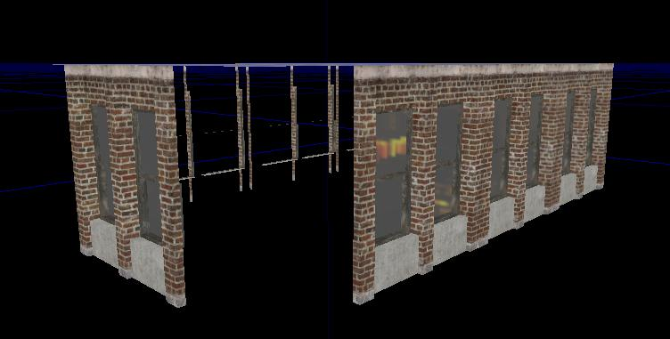
现在，我们需要定义角落网格物体。目前，在 ProcBuilding Volume 的每个角落都有一个空的占位符空间。 使用您的角落静态网格物体新建一个网格物体节点，然后将其设定为 90 度附件插槽。确保在 Mesh 节点的属性中设置网格物体的大小以及角落的大小。在这个示例中，我们将角落大小和 Mesh 节点上的 DimX 设置为 '1'。您可能需要使用这些值，才能使您的网格物体恰好合适。它最大程度取决于角落网格物体的支点所在位置。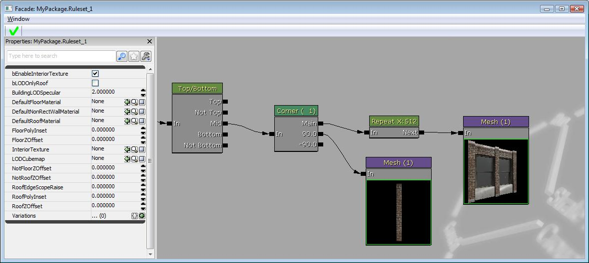
效果： 这样，我们就为建筑物建造了一个完整的地板。我们可以编辑 ProcBuilding Volume 的宽度，而网格物体会进行正确调整以便与体积大小相符。如果您尝试要编辑体积的高度，您将会发现网格物体会被拉伸。
这样，我们就为建筑物建造了一个完整的地板。我们可以编辑 ProcBuilding Volume 的宽度，而网格物体会进行正确调整以便与体积大小相符。如果您尝试要编辑体积的高度，您将会发现网格物体会被拉伸。
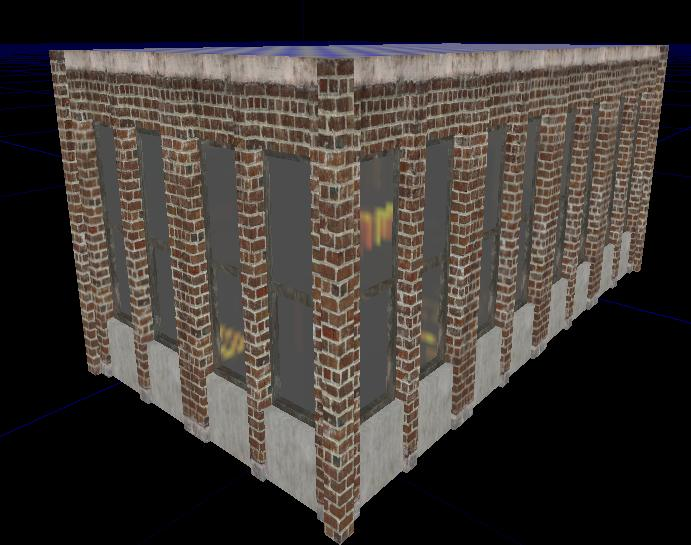
要解决这个问题，我们需要沿 Z 轴重复使用每个地板。要进行这项操作，请在 Corner 节点前面添加一个 Repeat 节点，然后将重复轴设置为 EPBAxis_Z。将重复大小设置为 512。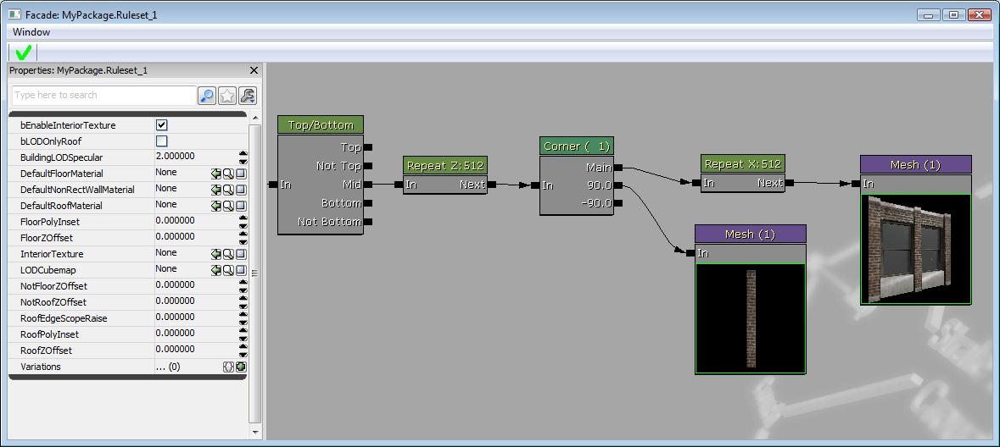
效果：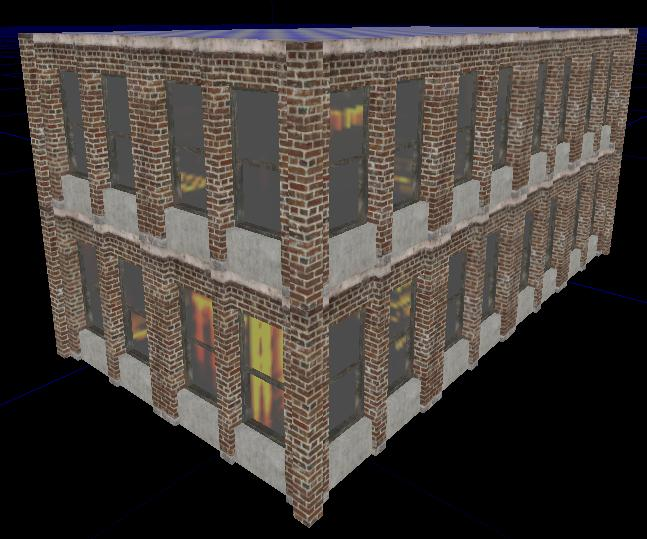
设置顶部剪切
 效果：
效果：

设置地面层
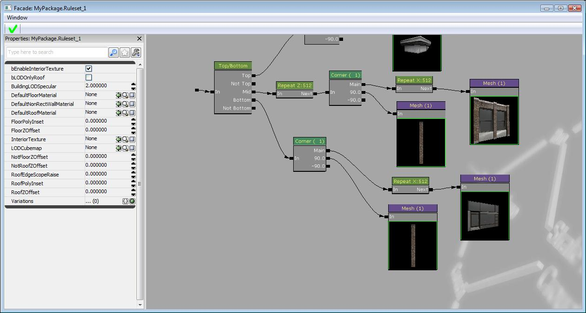
效果： 当前使用的设置方法中，地面层由一个重复使用的临街 Static Mesh 组成。要使它具有多变性，请在临街的 Mesh 节点上再添加一个网格物体插槽。在新的插槽中添加一个不同的 Static Mesh。现在，设置每个网格物体填充到这个插槽中的可能性。在这个示例中，我们为每个网格物体使用的是 .5。
当前使用的设置方法中，地面层由一个重复使用的临街 Static Mesh 组成。要使它具有多变性，请在临街的 Mesh 节点上再添加一个网格物体插槽。在新的插槽中添加一个不同的 Static Mesh。现在，设置每个网格物体填充到这个插槽中的可能性。在这个示例中，我们为每个网格物体使用的是 .5。
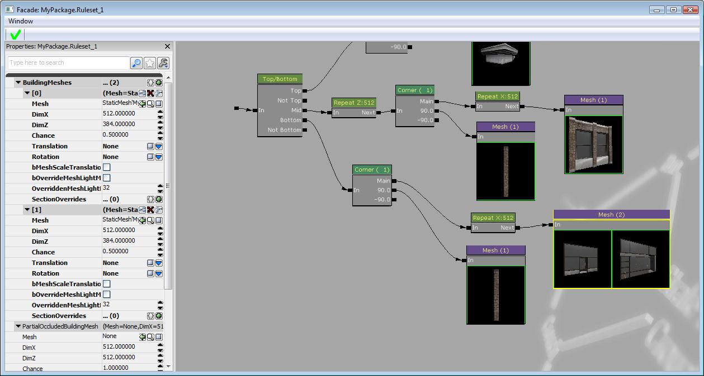
效果：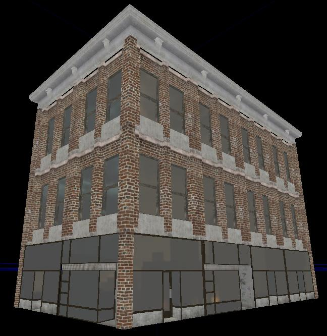
它应该会为您在虚幻引擎 3 中创建程序化建筑物 (Procedural Buildings) 打下良好的基础。请参阅程序化建筑物页面了解更多的相关内容说明。